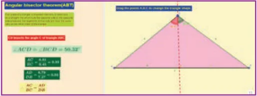
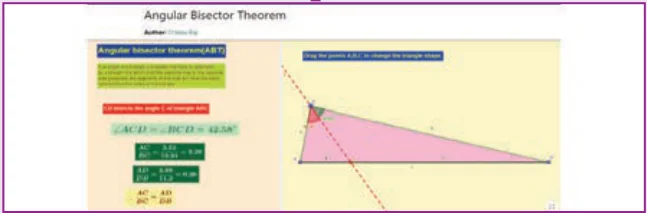
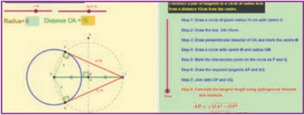
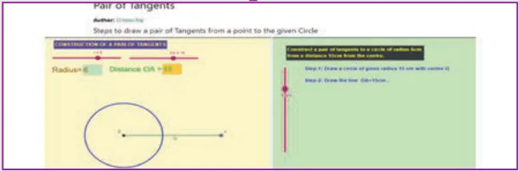

ICT 4.1
Expected results

Step 1: Open the Browser type the URL Link given below (or) Scan the QR Code. 10th Standard Mathematics Chapter named “Geometry” will open. Select the work sheet “Angular Bisector theorem”
Step 2: In the given worksheet you can see Triangle ABC and its Angular Bisector CD. and you can change the triangle by dragging the Vertices. Observe the ratios given on Left hand side and learn the theorem.

ICT 4.2
Expected results

Step 1: Open the Browser type the URL Link given below (or) Scan the QR Code. 10th Standard Mathematics Chapter named “Geometry” will open. Select the work sheet “Pair of Tangents”.
Step 2: In the given worksheet you can change the radius and Distance by moving the sliders given on Left hand side. Move the Slider in the middle to see the steps for construction.

You can repeat the same steps for other activities
https://www.geogebra.org/m/jfr2zzgy#chapter/356194
or Scan the QR Code.